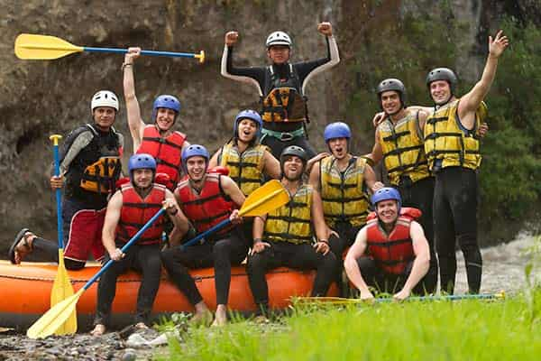

History
"I started rafting with AO in the mid 90's. From the lazy Tom Sawyer trip with the kiddos to the gorgeous exhilaration of the Tuolumne to the thrilling Cal Salmon and all in between, the AO family never disappoints! The oldest company on the river, with family at heart." - April, South Fork American
Having explored and set up 10 river operations throughout the State that vary from the easiest float trips to the most difficult whitewater and everything in between has given us a broad experience level and a hard-to-match expertise. we have established ourselves as the most knowledgeable and experienced.